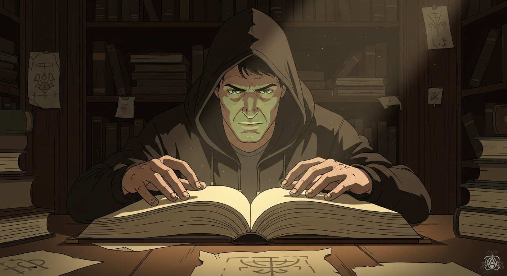
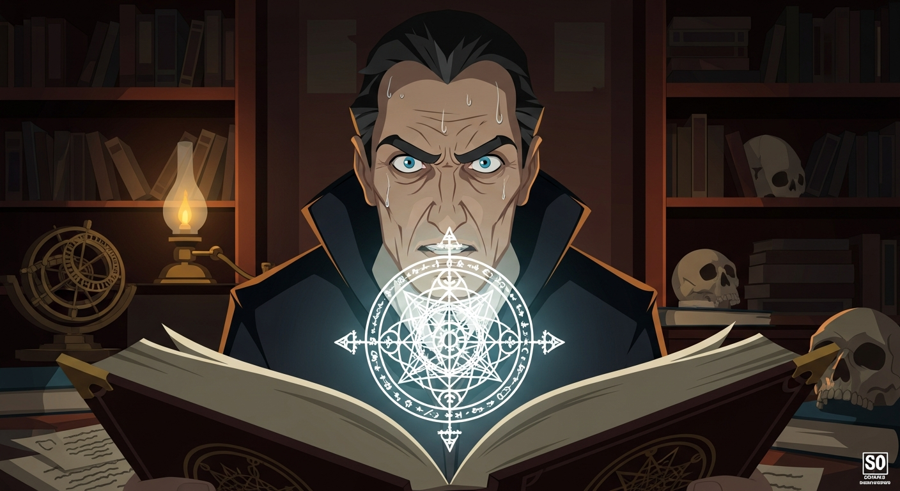

SLEDGE: Agrippa, Dee... both obsessed with a 'Cipher of Ages.' Supposedly, it unlocks patterns in texts like *Picatrix*, even *Invisibilia Dei*. F (scoffs): Hidden knowledge? Sounds like folklore. (Later, ALEXANDER secretly pulls out *Arthur C. Clark's Mysterious World*. Reads): Wait... a coded reference. (Uncovers a hidden message in the book).

Driven by the cipher, Alexander finds a shop whispered to hold forbidden lore, maybe even a *Necronomicon* fragment—though that's almost certainly a misattribution, that is to say, folks. The owner, Agrippa reborn, tests him. Alexander, recalling Dr. Sledge, deciphers the final message. The Cipher isn't a key, but a path. Rigorous inquiry *is* the secret.